BMW 650i Coupé y Cabrio, prueba (conducción y dinámica)
Wed, 15 Feb 2012 11:00:00 GMT
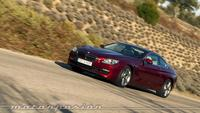
Cuando pruebas un coche como el BMW 650i Coupé y Cabrio con su motor V8 TwinTurbo, 407 caballos de potencia y una aceleración de 0 a 100 km/h en 4,9 segundos es fácil pensar que lo más probable es que durante la prueba haya sucumbido a sus encantos.
Pero lo cierto es que también se trata de un coche de aspecto deportivo, casi 5 metros de largo y un peso de 1.845 kilos que no hacen de él precisamente un peso pluma de esto de los coches deportivos. Pero ¿eso se aprecia al volante?
Comienza la parte más esperada de la prueba, esa en la que os cuento en primera persona como se comporta el BMW 650i Coupé y Cabrio tanto en carretera como en ciudad y en uno de sus hábitats preferidos, los viajes relámpago en carretera.
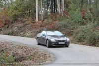
Antes de comenzar a hablaros del comportamiento dinámico del ambos, he de decir que pude conducir mucho más tiempo la versión cerrada, mientras que el Cabrio pasó por mis manos “solo” un par de días.
Así pues, la mayoría de las sensaciones que os quiero transmitir vienen de la versión Coupé. Pero también es importante tener en cuenta, que dinámicamente apenas hay diferencias entre ambas versiones. La rigidez del chasis del Cabrio hace que haya que ser muy fino para apreciar diferencias.
Los primeros kilómetros de la prueba, los hice principalmente por ciudad, utilizando el coche como vehículo para moverme de casa a la oficina, ir a hacer recados y demás uso normal. Suavidad, esa es la palabra que creo mejor define el comportamiento del coche en ciudad.
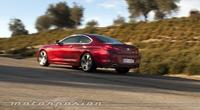
Y es que el motor V8 Twin Turbo, a pesar de desarrollar 407 caballos de potencia y tener un impresionante par motor de 650 Nm constante entre 1.750 y 4.500 RPM, por ciudad incita más a un uso tranquilo y sosegado que a estirarlo al máximo y llevar siempre cada marcha hasta el corte.
Es un coche muy cómodo para el día a día, aunque quiero matizar esta afirmación. Algunos pensaréis que me he vuelto loco porque un coche de casi cinco metros de largo, no puede ser útil en ciudad. Pero lo cierto, es que excepto para buscar sitio dónde aparcar en calles estrechas, el BMW 650i puede usarse perfectamente a diario.
Me gustó mucho el tacto que tiene la dirección electromecánica de serie, y la unidad de pruebas también equipaba la dirección activa opcional, que sencillamente parece adivinar por dónde quieres llevar el coche en cada giro.
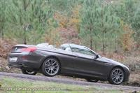
Y es que cuando equipas el BMW 650i con la dirección activa, las ruedas traseras también efectúan un giro de hasta 2,5 grados en la dirección contraria a las ruedas delanteras siempre que rodemos a menos de 60 kilómetros por hora. De ahí lo dócil que se muestra en ciudad.
Este sistema, también mejora el comportamiento en carretera. ¿Cómo? Pues cuando ruedas por encima de los 60 km/h, las ruedas traseras giran en el mismo sentido de las ruedas delanteras, algo inapreciable al volante, pero sin duda uno de los pequeños factores que hacen de él uno de los coches más eficaces que he probado en curvas en los últimos años.
Cuatro personalidades perfectamente definidas
A la hora de hablar del comportamiento del coche, no podemos hacerlo sin hablar de un botón mágico situado en la consola central, al lado de la palanca de marchas. Se trata del selector de reglajes que permite elegir entre los modos “Comfort”, “Sport” y “Sport+”.
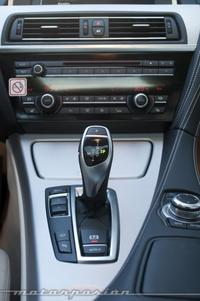
En el caso de la unidad de pruebas, había un modo más al estar equipado también con el control dinámico de la amortiguación y el Adaptive Drive. Se trata del modo “Comfort+”.
Llevamos años escuchando hablar de estos sistemas, todavía recuerdo los BMW M3 E46 y su cambio de carácter cuando llevabas activado el modo “Sport”. Pero en el caso de este BMW 650i, podemos hablar de estos cuatro modos como si se tratase de coches con personalidades completamente independientes.
Cada uno de ellos, hace que el comportamiento del coche cambie por completo, incidiendo en la respuesta del motor, del cambio de marchas, las suspensiones, la dirección y en el control de estabilidad DSC entre otros. En definitiva, estamos ante un coche distinto en cada modo.
En el “Comfort+” el coche tiende siempre a rodar en las marchas más largas posibles, la suspensión se pone en su modo más blando, la dirección es más directa y en definitiva, todo el coche parece estar en un placentero estado de letargo.
Si no queremos tanto nivel de tranquilidad al volante, podemos pasar al modo “Comfort”, que básicamente pone todos estos parámetros en un punto más cercano al “Sport”. Aunque no os lo creáis sabiendo como me gustan los coches deportivos, la mayor parte del tiempo rodé con el coche en ese modo, “comfort”. ¿Me estaré haciendo mayor?
Yo creo que no, que por planteamiento el BMW 650i con su motor V8, por su tamaño y por su configuración, incita más a pasear que a rodar al ataque en un puerto de montaña. No creo que muchos de los compradores de este coche busquen una conducción realmente deportiva, pero es una pena porque el coche me ha sorprendido muy gratamente en este sentido.
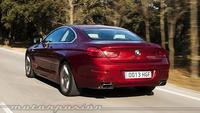
Sport y Sport+, entrada en otra dimensión
Tal vez me tacheis de exagerado, pero lo cierto es que hacía mucho tiempo, que un coche no me sorprendía tanto rodando en carreteras de curvas. Tuve la ocasión de rodar con ambos BMW 650i por carreteras de montaña en Galicia, más típicas de un rallye que de acceso a una estación de esquí.
Y el BMW 650i tiene un comportamiento sencillamente inigualable entre los coches de su segmento. Con el modo “Sport” activado, las suspensiones se endurecen, la dirección se adapta a la conducción deportiva y la respuesta del motor combinada con el cambio, que permite estirar más las marchas, sorprenden a propios y extraños.
Los ritmos de paso por curva, hacen que en ningún momento pienses que estás al volante de un coche de casi cinco metros de largo y casi dos toneladas de peso. Es más, me atrevo a decir que parece que llevas un coche más ligero y ágil incluso que el BMW M3.
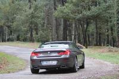
En todo momento tienes una sensación de confianza absoluta, por muy rápido que entres en las curvas el chasis parece que siempre está preparado para absorver más y más. La velocidad de paso por curva es altísima, y puedes pisar con contundencia el acelerador cuando comienzas a poner la dirección recta, que la trasera apenas se inmuta.
Sales de las curvas tratando de pisar a fondo el pedal derecho, el motor V8 y sus 407 caballos de potencia te pegan al asiento, comienzas a escuchar el sonido del motor rebotando contra los taludes laterales de la carretera y en nada estás encima de la siguiente curva. Si este coche se comporta así, no quiero ni pensar en el próximo BMW M6 que acaba de salir a la luz. ¿O si que quiero pensar en él?
Admito, que no se atribuír claramente a qué se debe este excepcional comportamiento del coche en conducción deportiva. Solo puedo decir, que tienes la sensación de tener entre tus manos un coche perfectamente puesto a punto para eso, para correr. Y eso que ese no debería ser sobre el papel su objetivo.
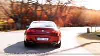
Para los que quieren que las sensaciones fuertes se multipliquen exponencialmente en cada curva, en cada recta y en cada frenada, todavía hay un modo más deportivo, el “Sport+”. Básicamente, con él haces que el carácter del coche se vuelva más radical, y el umbral de actuación el control de estabilidad te permite disfrutar de derrapajes controlados capaces de acelerar tus pulsaciones hasta límites insospechados.
En este caso tengo que decir de forma clara, que ¡viva la electrónica! Y si es así, para dotar de varias personalidades a un mismo coche de forma tan clara, bienvenida sea también en el futuro BMW M6.
Uno de los puntos históricamente más criticados en los BMW, ha sido la eficacia de los frenos cuando llevas a cabo una conducción deportiva. Pero lo cierto, es que éste es un mito del pasado, ya que los últimos modelos de BMW que he probado, estaban a un gran nivel en este sentido.
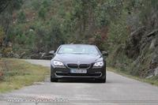
El BMW 650i también lo está, y lo pude comprobar durante la prueba en la que, igual que salias muy rápido de las curvas más cerradas, también llegabas a velocidades estratosféricas a las siguientes, y había que detener las casi dos toneladas de peso.
Los discos delanteros son de 374 milímetros, mientras que el diámetro de los discos de las ruedas posteriores es de 345 milímetros. Su comportamiento fue, desde el principio y hasta el final, sencillamente perfecto, con buen tacto y potencia suficiente a pesar de haberlos hecho trabajar a temperatura alta.
Eficiencia en formato V8
Estamos en la generación de la eficiencia por antonomasia, todos los coches por muy caros que sean, por muy potentes y por muy lujosos, buscan reducir al máximo los consumos. Parar cada día en una gasolinera, aparte de ser poco cool porque tienes que poner tu mismo el carburante, es cosa del pasado.
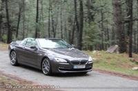
Y en el BMW 650i los consumos del V8 pueden dar miedo sobre el papel, pero luego te das cuenta de que ese mito de que los V8 beben más que Ernesto de Hanover en una boda, también pueden ser cosas del pasado. BMW anuncia unos consumos medios de 10,5 l/100 km, que son bastante cercanos a los reales.
Si bien es cierto que en ciudad es complicado bajar de 17 l/100 km, en cuanto comienzas a rodar en carretera, sin las constantes arrancadas y paradas del tráfico urbano, la cifra de consumo comienza a bajar y no es dificil bajar de 10 l/100 km.
Son cifras bastante lógicas para un coche que tiene 407 caballos escondidos bajo el capó, y son cifras que seguro harán que su dueño, solo tenga que ir a la gasolinera una vez por semana, gracias a su depósito de combustible de 70 litros.
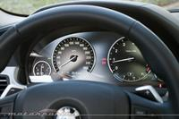
Viajando en clase preferente en las plazas delanteras
El BMW 650i, tanto en su versión Coupé como en el Cabrio, es un 2+2. Eso lo deja claro BMW desde el primer momento, y es que el mayor incoveniente de este coche está en las plazas traseras, que aunque han mejorado considerablemente en espacio, siguen siendo bastante justas.
Hacer un viaje largo en la parte trasera del coche, puede ser un tanto torturante excepto que se trate de ocupantes de muy baja estatura o niños. A cambio, tienes una capacidad de maletero bastante considerable, concretamente de 460 litros.
En cambio, en las plazas delanteras, el confort está en un nivel muy alto. Viajar con él es una auténtica delicia, por la suavidad de marcha, el silencio que se respira en el habitáculo y las sensaciones que transmite el coche. Es como viajar en clase preferente.
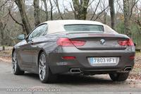
En este sentido, hay que hacer una mención especial al BMW 650i Cabrio, que tiene un nivel de aislamiento acústico realmente conseguido. Últimamente, los techos de lona de los cabrio de marcas premium, están al mismo nivel de insonorización que en los que llevan techo duro retráctil.
Para abrir la capota hacen falta 19 segundos, mientras que para cerrarla deberás utilizar 24 segundos. No es por tanto el más rápido en este sentido, pero es cierto que la maniobra se puede hacer en marcha siempre que no superemos los 40 kilómetros por hora.
Por tamaño, el BMW 650i Cabrio no es el coche perfecto para evitar que entre aire en el habitáculo, es muy largo. Pero si solo se ocupan las plazas delanteras, se puede montar el deflector de aire opcional que ocupa las plazas traseras, mantener subido el cristal vertical trasero y olvidarte del incómodo aire en el habitáculo. La configuración perfecta para rodar en invierno, acompañada de un poco de calefacción en los asientos.
Continuará…

El nuevo Kia Cee'd ya está aquí
Wed, 15 Feb 2012 09:00:00 GMT
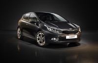
El Kia Cee’d salió al mercado hace cinco años, y fue retocado hace relativamente poco tiempo. Sigue un ciclo de vida muy corto, y la segunda generación ya está aquí. Ha cambiado en muchas más cosas de las necesarias como para considerar una nueva generación y no un simple facelift o restyling, lavado de cara en lengua de Cervantes.
Se ha europeizado aún más, diría que se ha inspirado mucho en la tendencia de los franceses de ofrecer más calidad pero a precios contenidos. Tal vez se ha alemanizado también, pero eso no se puede juzgar solo viendo unas fotografías. Es un modelo que dará que hablar a buen seguro.
Se presentará en el Salón de Ginebra, de momento con carrocería de cinco puertas. Todavía no sabemos los motores que tendrá ni los consumos que homologan, pero tenemos la primera información acerca de sus múltiples cambios estéticos y en el equipamiento que puede llegar a tener opcionalmente o en versiones más caras.
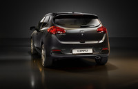
Por fuera han cogido algo muy afilado y lo han llenado de aristas y agresividad, en contraste con las tranquilas líneas redondas del modelo precedente. Luces LED, faros de xenón, intermitentes integrados en retrovisores, línea cromada alrededor de las ventanillas, capó esculpido, alerón deflector posterior, etc.
En la parte trasera vemos un parecido muy razonable con el SEAT León, pero no es el primer compacto ni mucho menos que adapta este estilo de compacto de líneas tirando a coupé y techo bajo. De hecho, es más bajito que el modelo anterior, pero más largo, más ancho, y con la misma batalla (distancia entre ejes).
Encontramos detalles de calidad como el limpiaparabrisas trasero carenado, doble luz de marcha atrás, sensores de aparcamiento integrados en el paragolpes sin sobresalir, ópticas de aspecto tridimensional, colín de escale elíptico cromado, etc. La única pega que le veo está relacionada con la aparente altura de la boca de carga del maletero.
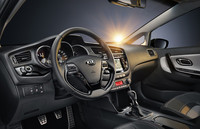
Un interior completamente renovado, y bien equipado
En el interior encontramos muchos cambios. El primer Cee’d tenía unas pretensiones más humildes, el nuevo modelo lo deja muy atrás y coquetea con aspiraciones Premium. Por cierto, es algo en el que el comunicado de prensa insiste mucho, pero recordemos que Kia no pretende competir con Audi o con Lexus.
La disposición instrumental está profundamente orientada al conductor, mientras que el modelo anterior era más simétrico. No se pueden juzgar los plásticos por tacto en una foto, pero en apariencia desde luego ha ganado varios enteros. Hay muchos cromados, negro piano, cuero… aquí ha hecho como en Citroën o Peugeot.
Ergonómicamente está mejor resuelto en todos los sentidos. El volante ahora tiene una concentración de botones más elevada, la consola central no tanto. Tiene tres pantallas, una dentro de la esfera principal del tablero, otra táctil para navegación/audio y otra más para el climatizador, que ahora es bizona.
Entre el equipamiento que tiene o puede tener, volante calefactado (seguramente en España no lo tenga), Bluetooth, control de velocidad, asistente de mantenimiento de carril (insólito en un coreano), asientos calefactados, freno de estacionamiento eléctrico (quizás el básico no lo tenga), etc.
Es posible que tanto equipamiento haga que el nuevo Cee’d en sus versiones más altas supere en precio al modelo actual. Eso sí, recordemos que el modelo actual tiene una gama muy recortada al ser últimas unidades. Los precios obviamente no los conocemos todavía, y habrá que esperar a primavera como poco.
Del primer Cee’d, modelo que conozco muy en primera persona, se le podía criticar lo espartano que era en algunos sentidos, pero considerando su precio, no era un reproche. Mi primera impresión de estas imágenes es muy positiva y estoy seguro que tendrá éxito de ventas.
Galería de fotos
(Haz click en una imagen para ampliarla)
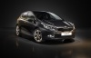
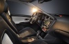
Hartge prepara el BMW Serie 1
Wed, 15 Feb 2012 07:00:00 GMT
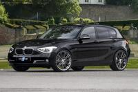
El fabricante alemán Hartge (que como ya hemos dicho en otras ocasiones tiene licencia de fabricante y no de preparador, como es el caso también de Alpina) presenta un paquete de medidas para el nuevo BMW Serie 1 (F20), que por cierto nosotros ya pudimos conducir.
Como es costumbre en Hartge, los cambios estéticos son muy poquitos, centrándose más en lo importante, las prestaciones, aunque curiosamente sólo de versiones diésel. Por fuera recibe llantas de 19 pulgadas en diferentes diseños, un conjunto de muelles que reducen la altura de la carrocería en 30 milímetros y logos Hartge. Por dentro la oferta se limita a pedalera de aluminio y alfombrillas de terciopelo.
Los cambios principales bajo el capó son cambios en la gestión electrónica del motor que permiten aumentar la potencia de las diferentes versiones, todas ellas turbodiésel: el 116d alcanza los 142 CV (310 Nm), el 118d los 174 CV (380 Nm) y el 120d puede llegar a los 218 CV y 450 Nm.
Galería de fotos
(Haz click en una imagen para ampliarla)
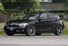
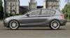
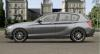
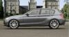
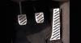
Vía | World Car Fans
En Motorpasión | Hartge H35d, basado en el BMW Serie 5 F10
BMW 650i Coupé y Cabrio, prueba (exterior e interior)
Tue, 14 Feb 2012 11:00:00 GMT
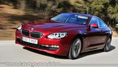
Hoy comienzo la prueba de uno de los modelos de coches que tenía más ganas de probar, el BMW 650i en carrocería Coupé y Cabrio. Lo admito, desde que salió al mercado en el año 2004 he sido fan incondicional del BMW Serie 6. No es el coche más práctico del mundo, ni el más deportivo, ni el más elegante. Pero tiene algo que engancha, o al menos así era en la primera generación.
Ahora ha llegado al mercado el nuevo BMW 650i, primero lo hizo en carrocería Cabrio y luego en Coupé. Y yo he probado ambas versiones precisamente en ese orden, primero pude rodar un par de días con el Cabrio y luego, la semana pasada he probado el Coupé durante toda una semana.
Mi objetivo, comprobar como ha evolucionado el nuevo BMW 650i respecto a la primera generación en todos los sentidos, tanto en diseño, como en eficacia sobre el asfalto. Hoy comenzamos con el análisis del exterior e interior. ¿Arrancamos?
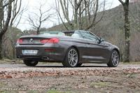
Diseño exterior
No creo que haya muchos que me discutan que el BMW Serie 6 de la anterior generación, era uno de los coches más bonitos del mercado y que ha conseguido enamorar a muchos fans de la marca. Mejorar el diseño de aquel coche, no parecía una tarea sencilla, pero me saco el sombrero ante los diseñadores de BMW porque creo que han conseguido hacerlo.
El nuevo BMW Serie 6 ha cambiado por completo, podemos hablar de un coche absolutamente nuevo. BMW habla de él como la tercera generación del BMW Serie 6, y no nos olvidemos de que en los años 80 hubo un BMW 635 CSi que marcó una época.
El nuevo modelo, es todavía más largo que el anterior, ha crecido 75 milímetros para hacerlo más confortable sobre todo en las plazas traseras, que eran su mayor punto débil. Pero la carrocería también crece 39 milímetros a lo ancho, y está cinco milímetros más bajo.
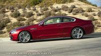
La línea general del coche sigue el estilo del modelo anterior. Carrocería marcada por un morro muy largo, el habitáculo muy retrasado y una trasera corta y musculosa que le dota de un aspecto inconfundible.
El aspecto frontal cambia por completo respecto al modelo anterior. Ahora las ópticas delanteras son más parecidas a las del resto de modelos de la gama BMW, más grandes y con más protagonismo. Los riñones característicos de la marca, también han crecido y están situados más adelante respecto al eje delantero que en el modelo anterior.
Las luces antiniebla de LED opcionales (264 euros) se integran en la parte superior de la entrada de aire que ocupa todo el ancho del faldón delantero. Quedan así separados de las ópticas delanteras, que en este caso también eran de LED adaptativas opcionales, con un precio de 2.754 euros.
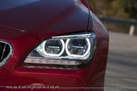
Las líneas que salen del capó, fluyen hacia atrás marcando las formas musculosas de la carrocería. Si lo vemos de lado, se nota que la distancia entre ejes también ha crecido. Es un coche grande, mide 4,89 metros y eso le otorga una presencia sobre el asfalto que no deja indiferente a nadie.
En las aletas delanteras, unas bránquias cromadas albergan en su interior los intermitentes delanteros, y combinan a la perfección con el marco cromado que recorre el perfil de las ventanillas.
Pero sin duda alguna, la parte que más me ha gustado del BMW Serie 6 ha sido la trasera, tanto en la versión Coupé como en la Cabrio. Las ópticas tienen una forma muy característica, ya que se dividen en dos partes, una siutada en las aletas y otra situada sobre la parte central de la tapa del maletero.
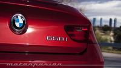
La línea del maletero, con su perfil hace que las ópticas se dividan cuando abrimos la tapa del maletero. Las luces son de LED, como es lógico en un coche de este nivel. Pero una vez más, lo que no me ha gustado nada es la forma de los escapes, ya que se recurre a formas rectangulares que dejan ver en su interior dos salidas redondeadas. En los 640i y 640d son redondas. ¿De dónde viene esta moda?
Por último, las llantas de la unidad de pruebas Coupé eran de 19 pulgadas opcionales, con un diseño de cinco radios dobles, un toque brillante y un precio de 2.568 euros. Lo veo demasiado caro teniendo en cuenta que las de serie también son de 19 pulgadas.
El BMW 650i Cabrio por su parte llevaba las llantas opcionales más grandes del catálogo BMW, de 20 pulgadas y un diseño realmente espectacular que realzaba mucho el asepcto del coche. Su precio alto, 3.505 euros.
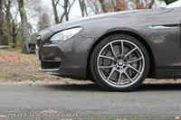
El interior 2+2 del BMW 650i Cabrio y Coupé
Después de deleitarnos con el diseño exterior del coche, vamos al interior. Lo primero que debemos tener en cuenta es que el BMW Serie 6 es, tanto en su versión Coupé como en la Cabrio, un 2+2. ¿Ésto que quiere decir?
Pues básicamente, que las plazas traseras son para uso puntual, no para el día a día. Y eso a pesar de que en esta tercera generación, éstas son más amplias y confortables que en la versión anterior.
Pero vayamos a la parte delantera, que es la que más va a disfrutar quien decida comprarse un BMW Serie 6 después de leer esta prueba. El salpicadero tiene un diseño realmente logrado, moderno y vanguardista en el que todos los mandos se disponen hacia la posición de conducción de forma evidente.
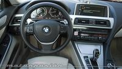
Las líneas del salpicadero, se disponen de forma fluída hacia la consola central que divide ambos asientos. Y claramente, el que tiene el control de todos los mandos es el piloto, ya que el acompañante se siente como “fuera” de ese entorno que crean las formas del salpicadero.
Y en un coche que cuesta de serie más de 100.000 euros, los detalles y calidad de acabados tienen que ser de primer nivel. Lo cierto es que en el BMW Serie 6 la calidad se percibe desde el primer momento. Por un lado, todo el salpicadero está forrado en piel.
La pantalla situada en el centro del salpicadero, no es un iPad colocado ahí. Es la que trae el coche cuando va equipado con el navegador Professional y tiene un impresionante tamaño de 10,2 pulgadas. Como es habitual, en ella puedes elegir entre navegador, teléfono, muscia, etc. a través del mando iDrive que ha mejorado mucho en cuanto a facilidad de uso desde las primeras versiones.
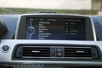
Pero no es la única fuente de información disponible, ya que la parte inferior de los dos relojes (velocímetro y revoluciones) está formada también por una pantalla en este caso de 9,2 pulgadas dónde hay datos de consumo, del funcionamiento instantáneo del EfficientDynamics y posibles alertas cuando algo no va bien.
Ambas unidades de pruebas, entre el abundante equipamiento opcional que traían, incluían el Head Up Display que proyecta información sobre el parabrisas delantero, un sistema muy cómodo por el que hay que pagar 1.745 euros.
Y otro de elemento del equipamiento opcional destacado, era el equipo de música Bang&Olufsen que llevaba el Coupé. Aunque el equipo de música de serie suena de maravilla, lo cierto es que si te gastas los casi 7.000 euros que cuesta el Bang&Olufsen, puede que no quieras ni escuchar el rugido el V8. ¿O no?
Continuará…
El Plan Renove de neumáticos eficientes fue un fracaso
Tue, 14 Feb 2012 10:00:00 GMT
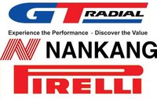
Una de las medidas que se instauró para reducir la dependencia del petróleo (o intentarlo), además de los famosos 110 km/h, fue el Plan Renove de neumáticos. Si te cambian las cuatro ruedas, y son de probada eficiencia energética, 80 euros de subvención. Este plan terminó en diciembre.
De los 4,8 millones de euros presupuestados, solo se han consumido el 30%. Es decir, se esperaban colocar 240.000 neumáticos eficientes y solo se han cambiado 70.000 de acuerdo a este plan. Estaba cantado el batacazo, porque solo Pirelli, Nankang y GT Radial hicieron los deberes. Los demás fabricantes simplemente pasaron del tema.
Además, las medidas contempladas en la subvención eran fundamentalmente pequeñas y no servía en el caso de dos ruedas. El Plan fue bastante criticado por los talleres, los fabricantes… En fin, otra brillante idea del ex-ministro Miguel Sebastián, que pese a la nobleza de su intención, ha sido inútil.
Los propios fabricantes dijeron que era más importante concienciar a los ciudadanos que llevar los neumáticos a la presión correcta ya es en sí una medida de ahorro. Y no olvidemos otro detalle, no tiene sentido para ahorrar cambiar neumáticos que aún están en condiciones de circular, ya que el cambio no es gratis.
Fuente | La Tribuna de Automoción
En Motorpasión | Hoy arranca el Plan Renove de Neumáticos, y hay un par de novedades interesantes (Junio 2011)
Sinfonía en el túnel a cargo de un Ferrari 599 GTO
Mon, 13 Feb 2012 22:00:00 GMT
Creo que no cabe duda que una de las maneras más apropiadas para disfrutar del sonido de un buen motor es dentro de un túnel. Con turismos convencionales la cosa no es para tanto pero cuando tenemos entre manos un superdeportivo con unos cuantos cilindros de más la cosa cambia.
Hoy os traemos un par de vídeos en los que un Ferrari 599 GTO, el buque insignia de la marca italiana, hace retumbar un túnel en China gracias al impresionante sonido de su V12 de 670 CV y 620 Nm de par máximo.
Dejando a un lado las opiniones sobre lo peligroso, apropiado o desafortunado o no de lo que hace el conductor del vídeo, al menos disfrutemos del sonido de ese V12 italiano que tanto nos gusta. Subid el volumen de vuestros altavoces. Merece la pena. El segundo vídeo, a continuación.
Vídeo | Youtube, Youtube
Vía | GT Spirit
En Motorpasión | Conduciendo un monoplaza en el Infierno Blanco
BMW Serie 3, presentación y prueba en Madrid (parte 1)
Mon, 13 Feb 2012 10:00:00 GMT
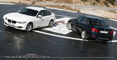
Desde que allá por el mes de octubre nos llegaran los primeros datos oficiales sobre el nuevo BMW Serie 3 berlina no hemos parado de ofrecer información con cuentagotas: Serie 3 con paquete M, precio del Serie 3...
Ahora hemos tenido ya la oportunidad de ponernos al volante del nuevo BMW Serie 3, aunque antes de empezar a contaros todo lo relacionado con el nuevo modelo os recomiendo una lectura interesante sobre la historia de la Serie 3 de BMW, el modelo más importante para la marca con cerca de un 28% de las ventas totales.
La sexta generación de la Serie 3 llega con un diseño más musculoso y al mismo tiempo elegante. Es más grande que su predecesor pero conserva las proporciones típicas de la marca alemana, con un capó largo, cortos voladizos, la marcada línea de cintura y una generosa distancia entre ejes.
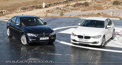
El nuevo Serie 3 es 9,3 centímetros más largo que el anterior, de los cuales 5 centímetros los ha ganado la batalla. Además es 8 milímetros más alto, aunque probablemente el dato más relevante es que aumenta el ancho de vías en 3,7 y 4,7 centímetros, delante y detrás, respectivamente.
La capacidad del maletero también ha aumentado en 20 litros hasta conseguir un volumen total de 480 litros, aunque BMW se enorgullece especialmente de haber conseguido mejorar la habitabilidad del vehículo, cuyo interior es más amplio y cómodo para sus ocupantes.
Estéticamente ya hemos dicho que conserva rasgos típicos de BMW, como la larga batalla o la marcada línea de cintura, pero también otros quizá más significativos, como los dos generosos riñones del frontal, que por primera vez en la Serie 3 presentan una unión con los faros, que si además son opcionalmente de xenón cuentan con anillos luminosos.
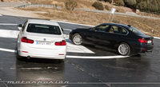
Tres líneas de equipamiento
Como ya ha hecho la marca con el BMW Serie 1 que pudimos conducir en Estoril, la nueva Serie 3 llega al mercado con una versión básica y tres líneas de equipamiento que nos permiten elegir el estilo que más nos guste: Sport, Luxury y Modern.
El precio de las diferentes líneas de equipamiento se mueve entre los 1.100 y los 1.800 euros (según motorización), lo que supone un ahorro importante frente a elegir el equipamiento deseado por separado, en lugar de en uno de los paquetes. De cualquier manera, los clientes pueden también optar por la versión básica del Serie 3, sin ningun acabado concreto.
La línea Sport, de corte más deportivo, luce paragolpes delantero y trasero con elementos específicos de color negro brillante, riñones delanteros con ocho listones verticales cada uno, llantas de 17 ó 18 pulgadas (éstas últimas de serie en las versiones 328i y 335i), carcasa de los retrovisores exteriores en color de la carrocería, montante central y guías de ventanillas de color negro, distintivo Sport en la aleta delantera y tubo de escape acabado en color negro cromo.
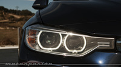
Por dentro ofrece estriberas de aluminio con el anagrama BMW Sport, asientos delanteros deportivos, volante deportivo de cuero con costuras en rojo, molduras interiores de color negro brillante, mandos del climatizador y la radio cromados, cuadro de instrumentos con números y agujas de color rojo, iluminación interior de color variable (a elegir por el conductor) o llave con remate en rojo, entre otras cosas.
La siguiente línea de equipamiento o Luxury es, como su nombre indica, la de pretensiones más lujosas. Exteriormente ofrece llantas de 17 ó 18 pulgadas (de serie en los 328i y 335i) y radios múltiples, elementos cromados en los paragolpes, parrilla de once listones cromados en cada riñon, marco de las ventanillas cromado, montante central y guía de las ventanillas en negro brillante, distintivo lateral Luxury y tubos de escape cromados.
Si pasamos al interior encontramos estriberas con la inscripción BMW Luxury, volante deportivo de cuero, asientos en tela Move Bernstein, molduras interiores en madera, iluminación interior de tono variable, remates cromados en mandos del climatizador y radio…
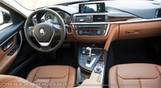Interior Línea Luxury
Por último, el acabado Modern ofrece elementos decorativos en aluminio mate satinado (en los paragolpes, por ejemplo) y cuenta, como el Luxury con once varillas en la parrilla.
Las llantas de 17 pulgadas lucen un diseño en V, mientras que las de 18 pulgadas (de serie sólo en el 328i y el 335i) tienen un diseño de turbina. Además del distintivo Modern en la aleta delantera los tubos de escape están acabados en aluminio cromado mate.
Por dentro se beneficia de estriberas con la inscripción correspondiente, asientos en combinación tela/cuero, volante deportivo de cuero en color Oyster oscuro (al igual que la parte superior del salpicadero o el cuadro de instrumentos, del mismo color crema oscuro), molduras interiores Pearl o acabados cromados en los mandos del climatizador y la radio.
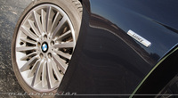
Paquetes de equipamiento y opcionales
Además de las tres líneas de equipamiento, BMW ofrece para su nuevo Serie 3 diferentes paquetes cerrados de equipamiento:
-
Paquete Cruise: Facilita la conducción gracias al control de crucero adaptativo, dirección Servotronic, sistema de manos libres Bluetooth con conexión USB y Control de Distancia de Aparcamiento (PDC) con sensores y avisos sonoros.
-
Paquete Comfort: Incluye la iluminación interior en tecnología LED, acceso sin llave y apertura inteligente del portón trasero, dos tomas de 12V, redes en los respaldos de los asientos delanteros, redes y ganchos para el maletero y compartimento segmentable bajo el piso de éste.
-
Paquete Visibilidad: Consta de faros bi-xenón con anillos luminosos LED autoadaptables, asistente de luz de carretera antideslumbrante, sensor de lluvia y retrovisor interior con ajuste antideslumbramiento.
-
Paquete Innovación: Cuenta con sistema de navegación Professional con lector de DVD, disco duro y pantalla a color de 8,8 pulgadas, Head Up Display e indicador del límite de velocidad de la vía por la que se circula.
Entre los opcionales más interesantes encontramos el techo de cristal eléctrico, volante calefactable, asientos calefactables, suspensión adaptativa o deportiva M, reglaje eléctrico de asientos, cambio automático de ocho velocidades, sistema de advertencia de cambio de carril, cámara de marcha atrás o sistema de sonido Harman Kardon de 16 altavoces y 600W, entre otras muchas cosas.
Paquete deportivo M
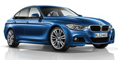BMW Serie 3 Paquete M
Además de las tres líneas de equipamiento opcionales, a partir del mes de julio podremos también optar por el paquete deportivo M, que refuerza considerablemente ese aspecto musculoso que tanto gusta del nuevo BMW Serie 3.
El paquete se compone principalmente de un kit aerodinámico, llantas de 18 pulgadas en diseño típico de M (o de 19 pulgadas opcionalmente), chasis deportivo M y una línea de diseño Shadowline brillante. De forma opcional se ofrecen también pinturas exclusivas M y los frenos deportivos.
En el interior el paquete incluye asientos deportivos con tapicería de tela y alcántara, listones decorativos de color azul, palanca de cambios de recorridos más cortos (en las versiones manuales, claro), molduras M para los umbrales de las puertas, un reposapiés M y un volante M de cuero.
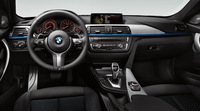
Mañana concluiremos con todo lo relacionado con las motorizaciones del nuevo BMW Serie 3, así como con prestaciones, precios y sensaciones al volante. No te lo pierdas.
Continuará...
Galería de fotos
(Haz click en una imagen para ampliarla)
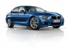
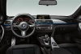
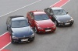
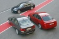
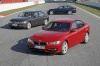
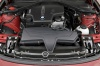
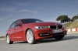
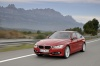
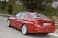
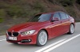
En Motorpasión | Nuevo BMW Serie 3 Berlina
Maybach pierde 330.000 euros en cada coche vendido
Mon, 13 Feb 2012 08:00:00 GMT
Tanto lujo se paga y muy caro, aunque no parece ser suficiente. Daimler ha estado teniendo pérdidas hasta que ha decretado el fin de la actividad de Maybach y el resultado según Car Magazine es que Maybach desde su resurrección ha perdido 330.000 euros por cada coche vendido. Eso es una cifra inasumible por cualquier fabricante.
Los Maybach de última generación eran menospreciados por muchos al ser calificados como poco más que un clase S recargado. Quizá algo de razón tengan, porque Mercedes dará un paso adelante para cubrir el hueco dejado por Maybach en el segmento, en ese lugar pretenden introducir alguna variante de la nueva clase S que veremos en 2013.
El futuro Mercedes S600 Pullman es el mencionado como sucesor de los Maybach. De momento y hasta que la quinta generación del clase S aparezca se seguirán fabricando Maybach, así que por ahora seguirán teniendo pérdidas. Personalmente no creo que pierdan tanto como ha calculado Car Magazine, tirar a la basura semejante cantidad de dinero es un lujo que no se puede permitir ni un fabricante tan grande como Daimler.
Vía | GTSpirit
En Motorpasión | Daimler cerrará Maybach
Mientras Tesla amplía horizontes, Toyota no da abasto. Regreso a Motorpasión Futuro
Sun, 12 Feb 2012 20:00:14 GMT
Tesla Motors, esa compañía “siliconiense” fundada por Elon Musk, y capaz de hacer que (casi) hasta el más reticente desee tener un coche eléctrico, sigue ampliando horizontes y ha desvelado por fin esta semana su nuevo modelo, el Tesla Model X, un todocamino, SUV o crossover eléctrico (cada cual que lo llame como prefiera), en la línea de diseño del cada vez más cercano Tesla Model S.
Y mientras, la japonesa Toyota, que si bien no apuesta demasiado aún por los vehículos eléctricos, sí lo hace con decisión por los híbridos (de gasolina, para mayor precisión) no da abasto con sus fábricas para atender la demanda de sus modelos. Y si no fijáos en el Toyota Prius C (conocido por Aqua en el país del sol naciente), un utilitario de menos de cuatro metros, cuyas reservas ya cuadriplican la capacidad de fabricación.
Moverse por ciudad, más si esta es grande, no suele ser fácil. Un coche exige tener que aparcarlo, y no siempre se encuentra un sitio cuando se necesita. Es por eso que no hay por qué descartar una moto para callejear, y si es eléctrica, mejor que mejor (menos ruido, cero emisiones locales y menor coste de uso). Esta semana os hemos hablado a fondo de la moto eléctrica Lima LEMev Stream.
Dolorpasión™: un gallardo novio estampa un Lamborghini Gallardo para celebrar el día de su boda
Sun, 12 Feb 2012 18:00:00 GMT
Casi se nos ha pasado el domingo sin celebrar nuestro homenaje al dolor más apasionado, pero aquí estamos una vez más. Como la parrillada de la semana pasada con Lamboghini Gallardo al punto nos dejó gusto a poco, hoy recuperamos coche pero cambiamos de protagonista para comprobar que esta preciosidad sobre ruedas se lleva muy mal con conductores poco acostumbrados a sus mandos.
Vamos al ejemplo que nos ocupa. Pongamos que hoy es el día de tu boda, y a tus 28 añitos decides celebrarlo por todo lo alto, que un día es un día. ¿Cómo lo haces? Pues… alquilando un Lamborghini Gallardo para impresionar al personal, claro. El problema viene cuando buscas aparcamiento y no lo acabas de encontrar, que se ve que la zona azul está muy cara en Sidney.
¿Qué haces entonces? Pues nada, coges el coche, atraviesas un descampado, te lanzas contra una valla (¿a quién se le ocurre ponerle puertas al campo?) y lo dejas ahí ensartado, como un miura en un chiquero. Luego sales del coche, te sacudes el polvo y esperas a que el tipo que te alquiló el coche te diga que el depósito que dejaste de 15.000 dólares… como que se te lo va a quedar un poco.

Esto sí que es celebrarlo por todo lo alto, y no lo que lían en Grecia cuando alguien se les casa. De todas formas, no quiero pensar yo en cómo entraría el buen mozo a la novia por la puerta de su nidito de amor. De eso, por desgracia (o no), no nos han llegado las fotos todavía. Estaremos atentos.
Vía | Wrecked Exotic Cars
Primeras imágenes del Lexus RX 2012
Sun, 12 Feb 2012 16:00:00 GMT

Tras presentar su nueva berlina media, Lexus ha decidido que ya es hora de poner al día el Lexus RX. Las imágenes que estáis viendo (son filtraciones), nos enseñan la nueva estética del SUV de Lexus, tanto por dentro como por fuera.
Lo primero que hay que decir es que no se trata de un modelo nuevo, si no de una puesta al día que homogeniza la estética de todos los modelos de la marca. Como podéis ver, el frontal del Lexus RX es ahora más anguloso (especialmente la parrilla delantera), y bastante parecido al del nuevo Lexus GS.
La parte trasera también parece haber recibido algunos cambios, pero de menor importancia. Por dentro también hay algunas novedades, de las cuales la más significativa es la presencia del nuevo volante, que comparte con el resto de sus hermanos.
Si nos fijamos más, veremos algunos mandos nuevos en la consola central, y diría que la pantalla central situada encima del salpicadero también es nueva, pero no puedo afirmarlo con seguridad. Por último, la novedad que ha sido desvelada junto con estas fotos es que esta nueva versión podrá tener una versión F-Sport, que debería incluir una imágen más agresiva y algunos ajustes en el comportamiento del vehículo para que sea más deportivo.
Lexus RX 2012
(Haz click en una imagen para ampliarla)
Vía | Carscoop
En Motorpasión | Nueva llamada a revisión de Toyota y Lexus… por pura paranoia
Lamborghini 350 GTV. Tenía el corazón tan grande, que no le cabía en el cuerpo
Sun, 12 Feb 2012 13:00:00 GMT
La Historia del automóvil está plagada de anécdotas curiosas y leyendas, cuya veracidad no es importante, siempre que sean bellas. El nacimiento de Lamborghini como marca es un tanto rocambolesco y el 350 GTV, el primer modelo de la saga, contradice la frase: lo que mal empieza, mal acaba.
A principios de los 60, el industrial italiano Ferruccio Lamborghini había hecho cierta fortuna fabricando tractores. En el tiempo en que nacieron The Beatles y John F. Kennedy llegaba al poder, Ferrari era el objeto de deseo de cualquier amante de los coches con dinero. Ferruccio compró uno que le dio muchos problemas.
Sus quejas ante el fabricante de deportivos no tuvieron respuesta. Cuenta la leyenda que un día llevó su protesta hasta el mismo Enzo Ferrari, quien le despachó con malos modos invitándole a que se ocupara de sus tractores y le dejara a él los problemas de los coches.
Lamborghini 350 GTV, el coche que nació de un enfado
El episodio con Enzo supuso un gran disgusto para Ferruccio Lamborghini, que decidió fabricar su propio deportivo y “construir un coche mejor que un Ferrari”. Como buen Tauro, que dicen son bastante tercos, Lamborghini puso en marcha su proyecto con la construcción de una fábrica en Sant’Agatha.
La impaciencia de Ferruccio le llevó a comenzar su aventura antes de tener las instalaciones en marcha, y los primeros pasos para la construcción del 350 GTV se iniciaron en la fábrica de tractores en Cento, su pueblo natal.
El motor que habría de animar la macchina no podía ser otro que un V-12, diseño que encargó a Giotto Bizzarrini, quien recientemente había dejado Ferrari. El primer rugido de la bestia se escuchó el 15 de mayo de 1963. La potencia de salida en las primeras pruebas fue de 350 CV DIN a 8.000 rpm. Lo que hubiera dado por estar allí y escuchar esa música celestial…
La idea de Ferruccio Lamborghini era otra, no quería un brusco coche de carreras, sino algo más civilizado y suave. Bizzarrini redujo la salida a sólo 270 CV a 6.500 rpm para el futuro coche de producción.
El chasis de tubo cuadrado de acero utilizado para este prototipo, fue realizado por Neri & Bonacini en Módena. Muchas partes del motor fueron fabricadas por ATS Microfusioni, en Sasso Marconi (Bolonia). La caja de cambios era una ZF, completada por un diferencial Salisbury axle.
La carrocería del Lamborghini 350 GTV fue diseñada por Franco Scaglione y construida por la fábrica de carrocerías Sargiotto de Turín. El color escogido para el modelo fue azul metálico. Todos los componentes fuero montados por primera vez por Automobili Lamborghini SpA.
La presentación del prototipo
El Lamborghini 350 GTV fue presentado en el Salón del Automóvil de Turín de 1963. Allí estaba para asombro de los visitantes el flamante prototipo, con su motor expuesto al lado. La razón de tan singular presentación… el motor no cabía dentro del coche.
Aquel diseño que tenía el corazón tan grande, que no le cabía en el cuerpo, fue almacenado y, en cierta medida olvidado, durante 20 años. Posteriormente fue restaurado, pintado en otro color (tono verdoso) y teniendo como no, que modificar el chasis.
Aunque inicialmente se restauró con la idea de exhibirlo en el museo de la marca, pasó a manos de un coleccionista privado japonés. Años después el 350 GTV fue recupera por Automobili Lamborghini SpA, y ahora puede disfrutarse en su museo.
Por alguna razón nadie tuvo en cuenta las medidas de los carburadores verticales, y con el motor montado no cerraba el capó. Esta pequeñez sin importancia no tuvo consecuencias y Lamborghini saltó a la élite del automóvil deportivo para la posteridad.
Lamborghini 350 GTV
(Haz click en una imagen para ampliarla)
Conduciendo un monoplaza en el "Infierno Blanco"
Sun, 12 Feb 2012 10:15:00 GMT
Habitualmente el mítico Nürburgring Nordschleife es conocido como el Infierno Verde, nombre que le puso Sir Jackie Stewart por el espectacular paisaje por el que discurre y por la dificultad de su trazado. No obstante, hay épocas en las que más que verde el Infierno es blanco.
Con la ola de frío que sufre Europa tanto el Ring como el moderno circuito de GP están totalmente nevados. ¿Es esto un inconveniente? Para muchos aficionados al Touristenfahrten probablemente lo sea, pero para el instructor jefe de la escuela de conducción de Nürburgring, Andy Gülden, es una auténtica oportunidad para disfrutar a lo grande.
Teniendo como patio de recreo el “Infierno Blanco“ y como juguete un monoplaza equipado con neumáticos de invierno, la diversión está más que asegurada, al igual que las cruzadas. No me enrollo más, os dejo comprobar por vosotros mismos las manos de Gülden. A disfrutarlo.
Vídeo | Youtube
Vía | GT Spirit
En Motorpasión | Nürburgring Nordschleife, análisis curva a curva
El Lexus CT 200h ya tiene ampliación de garantía
Wed, 15 Feb 2012 10:00:00 GMT
El nuevo híbrido de la gama, que también es el modelo más asequible de Lexus, es el nuevo niño mimado de la marca. Gracias a él, venden muchísimo más. Sin embargo, a nivel de garantía esto no estaba claro. Mientras toda la gama Lexus da cinco años de garantía ó 160.000 km, el Lexus CT 200h tiene tres años de garantía ó 100.000 km de serie.
El sistema híbrido tiene una garantía de cinco años ó 100.000 km, exactamente lo mismo que el Toyota Prius. A partir de ahora, la marca ofrecer un programa de garantía de dos años adicionales, Extracare, con el mismo nombre que la marca de gran volumen. Se extiende a cinco años sin límite de kilómetros.
El coste de esta garantía es de 575 euros, incluyendo IVA, y se puede contratar hasta el día antes de que venzan los tres primeros años. Tiene cobertura europea y es transferible si se vende el coche. Curiosamente, la Extracare+2 de un Prius con más de 90 días cuesta 605,26 euros, y 588,45 euros si está completamente nuevo.
Dicho de otra forma, la Extracare del CT 200h no es más cara que la del Prius, y debería ser al revés. Obviamente la letra pequeña que no incluye el comunicado de prensa aduce a visitar el servicio oficial para mantener esa garantía adicional. Todos los fabricantes, por Ley, deben dar dos años como poco, aunque nunca volvamos sus talleres.
Además, en el caso de Toyota, la extensión de garantía debe pedirse hasta tres meses antes de la finalización de la garantía normal (3 años/100.000 km), no hasta el último día. Incluye el coste de mano de obra y piezas por defecto de fabricación, pero los elementos de desgaste van aparte, como en todas las marcas.
Si me permitís un comentario personal, yo he contratado una Extracare para mi Prius, y me costó esos 600 y poco euros. El propietario de un Kia o un Hyundai tiene ya esa garantía a coste cero. Además, curiosamente, en Toyota admiten abiertamente que es el coche que menos costes tiene por garantías. ¿Alguien puede explicármelo?
Cariño, tenemos otra vez un coche en el salón
Wed, 15 Feb 2012 08:15:00 GMT
La casa del señor Curtis, en Haverhill
Aunque parezca mentira, hay gente como Jim Curtis, un ciudadano americano residente en Havervill, Massachusetts, que no está del todo cómodo en su salón. ¿La razón? Cada vez que escucha un frenazo teme no sólo por su casa, también por su vida.
La pasada semana el señor Curtis estaba tecleando en su ordenador cuando escuchó el chirriar de unos neumáticos. Apresuradamente se levantó del lugar donde estaba sentado y se puso a cubierto. Un Dodge Durango irrumpía en su salón, ¡y ya es la quinta vez que le ocurre!
Desde que en 1954 su familia adquiriera la casa, cinco coches han acabado ya en el Salón del pobre señor Curtis. Afortunadamente tanto Jim como el joven que conducía el vehículo han resultado ilesos, aunque la casa sí ha sufrido las consecuencias del impacto.
La tremenda mala suerte de este hombre tiene una explicación. La casa se encuentra muy próxima una intersección muy transitada por un lado y a una esquina muy conflictiva por otro, siendo el blanco perfecto de muchos automóviles fuera de control. Curtis ha pedido ya al Estado que instalen un guardarraíl frente a su casa para evitar nuevos e inesperados visitantes en su salón.
Vía | Jalopnik
En Motorpasión | Hay gente con mucha suerte edición XXXVIII: Cuando evitas una enorme montonera por los pelos
Ferrari 250 GTO, vendido por 24,2 millones
Tue, 14 Feb 2012 13:00:00 GMT
Del Ferrari 250 GTO, uno de los mejores deportivos (si no el mejor) de la Historia de automovilismo, se fabricaron entre los años 1962 y 1964 un total de 36 unidades con vistas a competir en la categoría GT. Muy pocos han sobrevivido hasta nuestros días, pero uno de ellos ha sido vendido en Reino Unido por la friolera de 20,2 millones de libras, unos 24,2 millones de euros.
Se rumorea que esta unidad es el Ferrari 250 GTO que se vendió en 2008 por 20 millones, y que ahora ha sido puesto a la venta de nuevo por razones económicas. En resumen, tendríamos un beneficio de más de 4 millones para la saca de su ya ex propietario, Jon Hunt, y un acaudalado comprador que podrá ser feliz oyendo rugir a esta leyenda sobre ruedas.
Lo más divertido del caso es que, por lo que cuentan, el flamante nuevo propietario del GTO podría ser alguien que reside en España. Si alguno de los presentes sabe de quién se trata o tiene sospechas fundadas, ya está tardando en contárnoslo, que somos gente de fiar.
Vía | Autoblog, Top Gear
En Motorpasión | Ferrari 250 GTO, el coche más caro del mundo con diferencia (2008), Un coleccionista compra un lote de 21 Ferraris (2010)
BMW 650i Coupé y Cabrio, prueba (exterior e interior)
Tue, 14 Feb 2012 11:00:00 GMT
Hoy comienzo la prueba de uno de los modelos de coches que tenía más ganas de probar, el BMW 650i en carrocería Coupé y Cabrio. Lo admito, desde que salió al mercado en el año 2004 he sido fan incondicional del BMW Serie 6. No es el coche más práctico del mundo, ni el más deportivo, ni el más elegante. Pero tiene algo que engancha, o al menos así era en la primera generación.
Ahora ha llegado al mercado el nuevo BMW 650i, primero lo hizo en carrocería Cabrio y luego en Coupé. Y yo he probado ambas versiones precisamente en ese orden, primero pude rodar un par de días con el Cabrio y luego, la semana pasada he probado el Coupé durante toda una semana.
Mi objetivo, comprobar como ha evolucionado el nuevo BMW 650i respecto a la primera generación en todos los sentidos, tanto en diseño, como en eficacia sobre el asfalto. Hoy comenzamos con el análisis del exterior e interior. ¿Arrancamos?
Diseño exterior
No creo que haya muchos que me discutan que el BMW Serie 6 de la anterior generación, era uno de los coches más bonitos del mercado y que ha conseguido enamorar a muchos fans de la marca. Mejorar el diseño de aquel coche, no parecía una tarea sencilla, pero me saco el sombrero ante los diseñadores de BMW porque creo que han conseguido hacerlo.
El nuevo BMW Serie 6 ha cambiado por completo, podemos hablar de un coche absolutamente nuevo. BMW habla de él como la tercera generación del BMW Serie 6, y no nos olvidemos de que en los años 80 hubo un BMW 635 CSi que marcó una época.
El nuevo modelo, es todavía más largo que el anterior, ha crecido 75 milímetros para hacerlo más confortable sobre todo en las plazas traseras, que eran su mayor punto débil. Pero la carrocería también crece 39 milímetros a lo ancho, y está cinco milímetros más bajo.
La línea general del coche sigue el estilo del modelo anterior. Carrocería marcada por un morro muy largo, el habitáculo muy retrasado y una trasera corta y musculosa que le dota de un aspecto inconfundible.
El aspecto frontal cambia por completo respecto al modelo anterior. Ahora las ópticas delanteras son más parecidas a las del resto de modelos de la gama BMW, más grandes y con más protagonismo. Los riñones característicos de la marca, también han crecido y están situados más adelante respecto al eje delantero que en el modelo anterior.
Las luces antiniebla de LED opcionales (264 euros) se integran en la parte superior de la entrada de aire que ocupa todo el ancho del faldón delantero. Quedan así separados de las ópticas delanteras, que en este caso también eran de LED adaptativas opcionales, con un precio de 2.754 euros.
Las líneas que salen del capó, fluyen hacia atrás marcando las formas musculosas de la carrocería. Si lo vemos de lado, se nota que la distancia entre ejes también ha crecido. Es un coche grande, mide 4,89 metros y eso le otorga una presencia sobre el asfalto que no deja indiferente a nadie.
En las aletas delanteras, unas bránquias cromadas albergan en su interior los intermitentes delanteros, y combinan a la perfección con el marco cromado que recorre el perfil de las ventanillas.
Pero sin duda alguna, la parte que más me ha gustado del BMW Serie 6 ha sido la trasera, tanto en la versión Coupé como en la Cabrio. Las ópticas tienen una forma muy característica, ya que se dividen en dos partes, una siutada en las aletas y otra situada sobre la parte central de la tapa del maletero.
La línea del maletero, con su perfil hace que las ópticas se dividan cuando abrimos la tapa del maletero. Las luces son de LED, como es lógico en un coche de este nivel. Pero una vez más, lo que no me ha gustado nada es la forma de los escapes, ya que se recurre a formas rectangulares que dejan ver en su interior dos salidas redondeadas. En los 640i y 640d son redondas. ¿De dónde viene esta moda?
Por último, las llantas de la unidad de pruebas Coupé eran de 19 pulgadas opcionales, con un diseño de cinco radios dobles, un toque brillante y un precio de 2.568 euros. Lo veo demasiado caro teniendo en cuenta que las de serie también son de 19 pulgadas.
El BMW 650i Cabrio por su parte llevaba las llantas opcionales más grandes del catálogo BMW, de 20 pulgadas y un diseño realmente espectacular que realzaba mucho el asepcto del coche. Su precio alto, 3.505 euros.
El interior 2+2 del BMW 650i Cabrio y Coupé
Después de deleitarnos con el diseño exterior del coche, vamos al interior. Lo primero que debemos tener en cuenta es que el BMW Serie 6 es, tanto en su versión Coupé como en la Cabrio, un 2+2. ¿Ésto que quiere decir?
Pues básicamente, que las plazas traseras son para uso puntual, no para el día a día. Y eso a pesar de que en esta tercera generación, éstas son más amplias y confortables que en la versión anterior.
Pero vayamos a la parte delantera, que es la que más va a disfrutar quien decida comprarse un BMW Serie 6 después de leer esta prueba. El salpicadero tiene un diseño realmente logrado, moderno y vanguardista en el que todos los mandos se disponen hacia la posición de conducción de forma evidente.
Las líneas del salpicadero, se disponen de forma fluída hacia la consola central que divide ambos asientos. Y claramente, el que tiene el control de todos los mandos es el piloto, ya que el acompañante se siente como “fuera” de ese entorno que crean las formas del salpicadero.
Y en un coche que cuesta de serie más de 100.000 euros, los detalles y calidad de acabados tienen que ser de primer nivel. Lo cierto es que en el BMW Serie 6 la calidad se percibe desde el primer momento. Por un lado, todo el salpicadero está forrado en piel.
La pantalla situada en el centro del salpicadero, no es un iPad colocado ahí. Es la que trae el coche cuando va equipado con el navegador Professional y tiene un impresionante tamaño de 10,2 pulgadas. Como es habitual, en ella puedes elegir entre navegador, teléfono, muscia, etc. a través del mando iDrive que ha mejorado mucho en cuanto a facilidad de uso desde las primeras versiones.
Pero no es la única fuente de información disponible, ya que la parte inferior de los dos relojes (velocímetro y revoluciones) está formada también por una pantalla en este caso de 9,2 pulgadas dónde hay datos de consumo, del funcionamiento instantáneo del EfficientDynamics y posibles alertas cuando algo no va bien.
Ambas unidades de pruebas, entre el abundante equipamiento opcional que traían, incluían el Head Up Display que proyecta información sobre el parabrisas delantero, un sistema muy cómodo por el que hay que pagar 1.745 euros.
Y otro de elemento del equipamiento opcional destacado, era el equipo de música Bang&Olufsen que llevaba el Coupé. Aunque el equipo de música de serie suena de maravilla, lo cierto es que si te gastas los casi 7.000 euros que cuesta el Bang&Olufsen, puede que no quieras ni escuchar el rugido el V8. ¿O no?
Continuará…
BMW Serie 3, presentación y prueba en Madrid (parte 2)
Tue, 14 Feb 2012 08:00:00 GMT
Como ya os fuimos contando ayer, el BMW Serie 3 llega con un diseño más atractivo y musculoso que el modelo al que sustituye, es considerablemente más grande y gana también en habitabilidad interior y capacidad del maletero, pero… ¿qué mejoras habrá bajo el capó?
Si por fuera mantenía los rasgos típicos de la marca como la marcada línea de cintura, los dos riñones frontales, los cortos voladizos o la generosa batalla, bajo su piel también conserva los valores clásicos de BMW: motor longitudinal, propulsión y reparto de pesos 50:50.
Como viene siendo habitual, muchos de los esfuerzos por parte del fabricante se han centrado en conseguir buenas prestaciones y reducir al mismo tiempo las cifras de consumo y emisiones de las diferentes versiones. La más eficiente de la gama emite sólo 109 gramos por kilómetro de dióxido de carbono y la más asequible (que no es la misma) cuesta 29.990 euros. Veámoslo en detalle.
Motores del BMW Serie 3
Desde hace unos años la denominación Efficient Dynamics nos suena, y mucho. En el caso del nuevo BMW Serie 3 este conjunto de medidas en pro de la eficiencia también está presente.
Las principales medidas del programa Efficient Dynamics que contribuyen a reducir el consumo (y por tanto las emisiones) son la función Auto Start/Stop en todas las versiones, el cambio automático de ocho velocidades (opcional), el sistema de recuperación de energía en la frenada, la optimización de la aerodinámica, el indicador de cambio de marcha o el modo de conducción Eco Pro.
En este apartado concreto de motorizaciones, las medidas que más nos interesan son las que engloba la tecnología BMW TwinPower Turbo, que en los motores de gasolina son el uso de un turbocompresor TwinScroll, Valvetronic (sistema de regulación variable de válvulas), Doble Vanos (regulación variable de los árboles de levas) e inyección directa, y en los propulsores diésel son la inyección directa Common Rail y turbocompresor de geometría variable.
El motor más eficiente de toda la gama es el de la versión denominada 320d ED (Efficient Dynamics). Se trata de un cuatro cilindros turbodiésel de 2 litros de cilindrada que tiene una potencia de 163 CV (el 320d “normal” alcanza los 184 CV) y un par motor máximo de 380 Nm. Esta motorización consigue un consumo medio de 4,1 litros y unas emisiones de 109 g/km de dióxido de carbono, un récord en su segmento.
No obstante, aunque el 320d ED es la versión más eficiente, no es la más asequible, así que vayamos por orden. El diésel de acceso a la gama es el 316d, también de cuatro cilindros y 2.0 litros pero de 116 CV y 260 Nm de par máximo. Acelera de 0 a 100 km/h en 10,9 segundos y alcanza los 202 km/h. El consumo medio es de unos 4,5 litros a los cien kilómetros.
El siguiente escalón en la gama diésel es el 318d, también un 2 litros pero en este caso de 143 CV y con un par máximo de 320 Nm. Alcanza los 100 km/h desde parado en 9,1 segundos y consigue una velocidad punta de 210 km/h. Consigue también una media de consumo de 4,5 litros a los cien kilómetros.
El diésel más potente de la oferta es el 320d de 184 CV, que consigue un par máximo de 380 Nm y es capaz de acelerar de 0 a 100 km/h en 7,5 segundos y rozar los 235 km/h de velocidad máxima. El consumo medio, por su parte, es de sólo 4,6 litros a los cien kilómetros.
En la gama de gasolina la versión de acceso es el 320i, un 2.0 litros de cuatro cilindros que arroja una cifra de potencia de 184 CV y un par motor máximo de 270 Nm. Acelera de 0 a 100 km/h en 7,3 segundos, alcanza los 235 km/h y consume 6,3 litros, de media.
El motor más novedoso de toda la oferta es el que monta la versión 328i, y es de nueva factura. Se trata también de un cuatro cilindros de dos litros pero consigue alcanzar los 245 CV de potencia a 5.000 RPM y un par motor máximo de 350 Nm entre las 1.250 y las 4.800 vueltas.
Lo mejor de este nuevo motor es que puede catapultar al Serie 3 de 0 a 100 km/h en sólo 5,9 segundos y hacerle alcanzar los 250 km/h (limitación electrónica), pero al mismo tiempo puede obtener un consumo medio de sólo 6,4 litros, un 11% menos que el anterior 325i, de menor potencia (218 CV).
Si decidimos equipar el 328i con el cambio automático de ocho velocidades el sprint de 0 a 100 km/h le lleva dos décimas más (6,1 segundos) pero el consumo se reduce en una décima de litro, lo que corresponde a un consumo medio de 6,3 litros a los cien kilómetros.
Por último, la versión más potente hasta la llegada del nuevo BMW M3 es el 335i, todo un seis cilindros de 3 litros de cilindrada con una potencia de 306 CV a 5.800 RPM y un par motor máximo de 400 Nm entre las 1.200 y las 5.000 vueltas, aproximadamente.
Gracias a la cantidad de potencia y par, el 335i es capaz de acelerar de 0 a 100 km/h en 5,5 segundos (una décima más rápido que su antecesor) y alcanzar una velocidad máxima limitada de 250 km/h. El consumo medio es de 7,2 litros con el cambio automático y de 7,9 litros con el manual de seis velocidades.
Al volante del nuevo Serie 3
Después de ver prácticamente todo lo que ofrece el nuevo BMW Serie 3 vamos ya con lo más interesante, las primeras impresiones que nos ha transmitido al montarnos en él y conducirlo por carreteras madrileñas.
Antes incluso de arrancarlo nos acomodamos en el asiento de cuero de nuestro BMW 335i con el acabado Luxury y comprobamos que con ocupantes delanteros de en torno a 1,80 metros de altura pueden viajar detrás con suficiente espacio para las piernas personas de la misma altura.
El interior del nuevo Serie 3 transmite una gran sensación de calidad (sobre todo con el acabado Luxury de nuestra unidad), haciéndote pensar incluso que estas a bordo de todo un Serie 5. Por otra parte, nosotros no hemos sido capaces de apreciar el aumento de volumen del maletero aunque sí nos hemos dado cuenta de que la boca de carga es quizá algo estrecha.
Según apretamos el botón de arranque (porque no, no hay que girar la llave) el 3 litros cobra vida y nos deleita con ese clásico sonido “gordito” de seis cilindros. Nuestra unidad llevaba el cambio automático de ocho velocidades que, aunque es efectivo, también permite rodar con mucha suavidad. Eso sí, echamos en falta levas de cambio tras el volante.
La respuesta del 335i es buena y su sonido es de los que gustan, aunque desde el interior del vehículo el ruido del motor es muy discreto. La insonorización es tan buena que incluso querríamos poder disfrutar del sonido del seis cilindros a un mayor volumen.
El coche acelera con ganas pero la sensación de aceleración no impresiona tanto como se espera. No obstante, sólo hay que mirar al velocímetro para darse cuenta de que, efectivamente, la velocidad sube bastante rápido aunque no nos dé esa impresión desde el interior.
Una vez en marcha destaca lo cómodo que se siente este Serie 3 en carretera, incluso en el modo de conducción más deportivo. Éste, denominado Sport, endurece la suspensión y nos enseña los dientes sólo con presionar el botón, ya que si estamos circulando de forma tranquila nos reduce una marcha instantáneamente y el motor sube ligeramente de vueltas, dejándose oír.
Los modos de conducción son Comfort, que es el más cómodo y el que llevamos por defecto al arrancar el vehículo, Sport, el más deportivo, y Eco Pro, un modo que nos ayuda a llevar una conducción más eficiente y ahorradora.
El tacto de la dirección es bastante bueno, aunque no nos pareció especialmente comunicativa. La ganancia en dimensiones se nota y somos capaces de apreciar que tenemos entre manos un coche grande (cada día lo son más), aunque sigue siendo bastante neutro en el paso por curva.
En cuanto a consumos se refiere pudimos sacar en claro que a ritmos legales en autovía podemos rondar los 8 ó 9 litros (son sólo estimaciones basadas en lo que marcaba el ordenador de a bordo) aunque si decidimos rodar con más alegría o recurrimos a su capacidad de aceleración los consumos se disparan por encima de los 12 litros con facilidad.
Versiones y precios
La fecha oficial de lanzamiento del nuevo BMW Serie 3 es el día 16 de febrero, aunque realmente ya se pueden hacer reservas en los concesionarios de la marca. No obstante, por ahora sólo se ofrecerán cuatro motores:
-
BMW 320d ED: 33.950 euros.
-
BMW 320d: 34.700 euros.
-
BMW 328i: 39.400 euros.
-
BMW 335i: 48.100 euros.
Por tanto hasta el mes de marzo la versión más asequible será el 320d ED, aunque a partir de entonces llegarán las tres que faltan, incluidas las de acceso a la gama tanto en gasolina como en díesel:
-
BMW 316d: 29.990 euros.
-
BMW 318d: 31.850 euros.
-
BMW 320i: 34.500 euros.
Galería de fotos
(Haz click en una imagen para ampliarla)
Galería de fotos
(Haz click en una imagen para ampliarla)
Los gastos del viaje para esta presentación han sido asumidos por la marca. Para más información consulta nuestra guía de relaciones con empresas.
En Motorpasión | BMW Serie 3, presentación y prueba en Madrid (parte 1)
Infiniti Emerg-E, a la vista antes de tiempo
Mon, 13 Feb 2012 18:45:00 GMT
.jpg)
Hace apenas 10 días pudimos ofreceros algunos datos adicionales sobre el eléctrico de autonomía extendida y altas prestaciones (no se especificó a que se refieren con eso) de Infiniti.
Se nos decía entonces por parte de la marca que tendríamos que esperar hasta el 6 de marzo de este año para conocer más datos sobre el modelo, así como algunos detalles más sobre su aspecto definitivo. Sin embargo, los bocetos que Infiniti habría presentado en la oficina de patentes europea han sido, según parece, filtrados, dejando al descubierto el esquema general del modelo.
Personalmente creo que a la vista de las formas que vemos, el modelo no decepciona. Parece ser realmente bajo, y tiene unas formas angulosas y marcadamente deportivas. Podemos distinguir además lo que podría ser un techo fabricado en fibra de carbono y unas entradas de aire con rejilla de nido de abeja.
Por el momento, dado que estas imágenes no han sido proporcionadas por Infiniti no podemos asegurar sin margen de error que el aspecto definitivo del Infiniti Emerg-E sea este, pero dado que coinciden plenamente con las imágenes que habíamos podido ver hasta ahora, parece probable. En cualquier caso en menos de un mes saldremos de dudas.
Infiniti Emerg-E
(Haz click en una imagen para ampliarla)
Vía | Autoblog
En Motorpasión | Infiniti Emerg-E, la sorpresa de Infiniti para Ginebra
¿Tú qué instrumento tocas? Yo, un Chevrolet Aveo
Mon, 13 Feb 2012 09:00:00 GMT
Estos que veis en la imagen no son Eugenio y los Power Rangers, sino OK Go, una banda de indie rock originaria de Chicago y afincada en Los Ángeles cuyos componentes han decidido sacarle el máximo provecho a un Chevrolet Aveo. Han usado el coche, y de qué manera, en la grabación de uno de sus últimos temas musicales: ‘Needing / Getting’.
Hasta ahora, yo lo más extremo que había visto (y oído) era eso de grabar un disco a bordo de un vehículo en marcha, conectando todos los instrumentos a la mesa y haciendo virguerías con el equipo para que el ruido del motor no pasase a la grabación. Sin embargo, confieso que al ver el vídeo que os traigo hoy me quedé tó loko perplejo.
Si queréis averiguar cómo un coche como el Chevrolet Aveo se puede transformar, entre otros, en un instrumento musical de percusión sin necesidad de estrellarlo contra un muro, no os perdáis el siguiente documento gráfico. Vale la pena, ni que sea por el frikismo que destila:
¿Cuántos instrumentos habéis podido contar en toda esta enorme pista americana? Yo al llegar a los bidones me pierdo ya entre tanto despliegue de medios. Y el solo de guitarra tiene su punto también. En fin, por mucho que esto huela a montaje a 9.000 kilómetros de distancia, muy currado, pero montaje al fin y al cabo, la verdad es que resulta… chocante, nunca mejor dicho.
¿Alguien de los presentes se atreve a hacer una versión propia de ‘Needing / Getting’ con su coche?
Un saludo para Morrillu.
Vídeo | OK Go (YouTube)
La culpa fue del cha cha cha
Mon, 13 Feb 2012 06:00:00 GMT
Ahora que hemos dejado pasar el fin de semana desde aquellas palabras de María Seguí que reproduje aquí en Motorpasión, hoy me lanzo a la aventura de contarte por qué creo que la nueva directora general de Tráfico tiene algo de razón en lo que dice. ¿Que qué decía? Ahora mismo te refresco la memoria.
Dije que Seguí no quiere culpabilizar al conductor porque dice que a veces este no es consciente de sus acciones, y en parte eso es cierto. Luego venía la analogía de la leche pasteurizada, y ahí también tiene su parte de razón. Para acabar, Seguí sintonizaba con la Visión Cero de Suecia. Claro, que todo esto lo dijo en un acto oficial sobre este modelo de seguridad vial, y en la embajada del país escandinavo, así que… Sea como fuere, ¿hasta qué punto llegará esto a alguna parte?
Como puedes ver, hoy el fauna en ruta viene cargadito de elementos, así que lo mejor será estructurarlo un poco para que quede el menor número de cosas posibles en el tintero. Porque me voy a despistar y algo se me va a quedar, ya me conoces, así que cuento contigo para que me apuntes tus impresiones.
Decía yo el viernes que las palabras de María Seguí presentaban un doble filo, y no quiero dejar pasar más tiempo antes de explicarme. Doble filo, sí, porque algún conductor infractor avispado puede creer que le están haciendo víctima de sus propios actos. Pobrecito, no le juzguemos mal por conducir bajo los efectos de las drogas, que no era consciente de ello. Como digo, es un doble filo peligroso.
Perdónalos, porque no saben lo que hacen
Pero yo voy por otros derroteros cuando le doy parte de la razón a Seguí. Para explicarlo, me voy al verano de 2010, que me cabreé mucho cuando vi la campaña de la DGT que decía que todos sabemos qué hay que hacer para no matarnos con el coche. Vamos, que si nos estrellábamos era porque queríamos, tócate las narices. De la escasa sensibilidad al mostrar en los spots el momento de la llamada, mejor no hablo hoy. Ya lo hice en su día.
No, los conductores, y hablo en general, no saben qué hacer para no sufrir un siniestro vial, y en muchos casos no lo saben porque nadie se lo ha explicado y/o porque ni se lo han planteado. Hoy en día todo esto se cuenta (o debería) a quien pretende acceder al permiso de conducir, pero a ningún conductor de los de antes le han exigido que se lo aprenda ahora que sabe conducir.
Sin querer ponerme muy pesado, que no es la idea, resumo los conceptos de la siguiente forma. Un siniestro vial (salvo excepciones no los llamo “accidentes”, puesto que normalmente no son fruto del azar) sucede porque concurren una serie de factores que tienen que ver con la circulación. Como quiero abreviar, hablaré de factores inherentes al conductor, al vehículo y a la vía. Digo que lo abrevio así, aunque este esquema está ya desfasado. Otro día te cuento más.
Factores de riesgo propios del conductor serían el consumo de alcohol, drogas, medicamentos, la fatiga y el sueño, la falta de atención a la carretera, llevar una velocidad inadecuada, la propia tendencia al riesgo que tenga el conductor, su respeto por las normas… ese tipo de cosas. Factores propios de la vía serían un trazado o un firme deficientes, una mala señalización, todo lo relativo a la meteorología, el tráfico… Y en cuanto al vehículo, pues lo típico: neumáticos, frenos… lo que más le falla a nuestros coches, pero también un sistema de dirección que de repente se rompe, por decir algo.
Entonces, si a cada factor de riesgo le contraponemos una medida preventiva, tendremos la solución contra la siniestralidad vial. En forma de eslogan, siempre lo he dicho, aquella campaña de la DGT con Stevie Wonder lo clavaba: “Si bebes, no conduzcas”. Cuatro palabras y una coma bastaron para resumir un factor de riesgo y su medida preventiva de una forma impecable. Chapeau por la gente que parió aquel spot. Esa es la diferencia.
Conocimientos, destrezas, actitudes
Una vez repasado esto, tengamos en cuenta que los factores propios del conductor son los que abundan como concurrentes en las estadísticas de siniestralidad, y por eso siempre se han cargado las tintas sobre el conductor. Aquí caben discusiones de todo tipo, pero yo me voy a centrar en un simple taburete, el que durante años he pintado en una pizarra cuando hablaba de los riesgos del conductor.
Los factores de riesgo del conductor tienen que ver con las tres patas de un frágil taburete; un taburete que, si pierde una de las patas, se va directo contra el suelo. Esas tres patas se llaman conocimientos, destrezas y actitudes. Un ejemplo clásico hace referencia a la velocidad. Pongamos que en una vía hay una señal de limitación a 50 km/h. Cualquier conductor conoce qué quiere decir esa señal. Cualquier conductor puede hacer el gesto adecuado con el pie derecho para adecuar la velocidad de su coche a esa limitación. Entonces, si no lo hace, ¿por qué es? Quitando los despistes, estamos ante una cuestión de actitud.
Puede ser que el conductor no esté de acuerdo con la señal de 50, o que le parezca que ir a 70 km/h no es tan grave, o que… lo que sea. Tendrá sus razones, pero en cualquier caso la infracción no vendrá dada ni por desconocimiento de la norma ni por imposibilidad física de levantar el pie del acelerador.
Mi cabreo del 2010 vino por no dar toda esta información al conductor sino culpabilizarlo de forma torticera y retorcida: si te matas es porque quieres, porque ya sabes lo que hay que hacer. No, ni ese extremo ni el “perdónalos, que no saben lo que hacen”. Formemos a los conductores sénior de la misma forma (por lo menos) que a los futuros conductores se les pide que sepan todo esto, y a partir de ahí hablamos. Si simplemente se les dice que ya son mayorcitos como para estrellarse con el coche, pues…
Vías y vehículos pasteurizados
Debo reconocer que el ejemplo de la tuberculosis y la leche hervida me llegó al alma, en el buen sentido, que a mí los ejemplos gráficos me encantan (bueno, eso ya lo sabes). Si no tienes presente de qué hablo, resulta que la nueva directora de la DGT explicó que antes la gente contraía tuberculosis por no hervir bien la leche, pero en vez de culpabilizar a la gente se desarrolló un proceso para que no tuvieran que hacerlo y acabar con la enfermedad.
En el campo de la seguridad vial, hay que reconocer el mérito de los fabricantes de vehículos, que han ido incorporando sistemas y sistemas de seguridad que convierten los coches de hace 20 o 30 años en reliquias del pleistoceno en comparación a lo que se puede ver hoy en un salón del automóvil. Otra cosa es lo que efectivamente se pueda comprar cada uno, claro, pero al menos hay buenos coches.
En cuanto a las vías, la cosa va por barrios, y aunque ya sabemos tú y yo que hay carreteras que dan asco y vergüenza a partes iguales, también es justo reconocer que hay trazados que han mejorado sustancialmente. Lo dicho: aquí indefectiblemente cada uno contará la feria según le vaya en ella, ya que la pasteurización no ha sido generalizada.
Suecia, merece la pena conocer el ejemplo
Si la DGT de María Seguí va a hacer lo posible por acercarse al modelo sueco de la Visión Cero es algo que se me escapa, pero me extrañaría y me encantaría al 50 %. La Visión Cero, más allá de perseguir el noble objetivo de los cero fallecidos en carretera, contempla un escenario mucho más llamativo, donde la educación de los ciudadanos tiene un papel pri-mor-dial.
En Suecia, se persigue el objetivo cero desde el punto de vista de que los accidentes (sí, ahora digo “accidentes” y no “siniestros”) simplemente suceden. Los accidentes ocurren y es absurdo perder el tiempo buscando culpables. El objetivo en todo caso es buscar soluciones y llevarlas a la práctica. Como quien pasteuriza todos los factores de riesgo sin más dilación, no sólo proponiendo medidas preventivas sino haciendo de la medida preventiva el camino hacia el éxito. Y les funciona bastante bien.
No quiero extenderme mucho más, que hoy ya me he pasado cuatro pueblos y un peaje. Si te interesa el modelo sueco, no hace mucho que expliqué en Circula Seguro esto de la Visión Cero. Si María Seguí está por implantar el sistema al 100 %, desde luego me descubro ante ella. Pero la transición que nos espera, a Seguí y a todos, puede ser muy divertida de contemplar. Ya veremos cuánto dura la cosa.
En Motorpasión | La DGT de Seguí abandona la criminalización del conductor: se impone el ‘errare humanum est’
Neumáticos de clavos, un KTM X-Bow, un quad y una moto, una forma diferente de pasar el invierno
Sun, 12 Feb 2012 19:00:00 GMT
¿Os habéis recuperado del fresquete que nos ha traido Javier Álvarez con el monoplaza en el “infierno blanco”? Espero que sí, porque traigo más diversión sobre nieve y hay que aprovecharla antes de que se acabe el invierno. Un vídeo que llega desde Holanda donde nos muestran que un tracción trasera como el KTM X-Bow puede ser muy divertido sobre firme deslizante.
La clave está en utilizar neumáticos de clavos y sobre todo tener ganas de hacer el cabra un poco, para lo que además se unen a la fiesta del hielo una moto y un quad con neumáticos de clavos. Visto que solo con practicar un poco de conducción sobre nieve no es suficiente, se animan también a remolcarse sobre una cámara de aire tirando con el X-Bow y deslizándose por la nieve.
Así da gusto pasar el invierno, yo personalmente hubiese preferido poner unos conos y hacerme un minicircuito, pero parece que se lo han pasado teta de todas formas. El remate al día: colocar en el KTM X-Bow la pegatina de “Yo hago mis propias acrobacias”. No tiene tanto mérito como llevar un monoplaza por Nürburgring nevado, pero también tiene pinta de ser muy divertido.
Vídeo | Youtube
Vía | Autoblog
En Motorpasión | Conduciendo un monoplaza en el “Infierno Blanco”
¿Puede una prótesis mamaria amortiguar el impacto sufrido en un accidente?
Sun, 12 Feb 2012 17:00:00 GMT
Curiosa historia nos hemos encontrado este domingo. Resulta que tras la Super Bowl, Sheyla Hershey conducía su Ford Mustang de camino a casa (en Houston), cuando, tras perder el control del mismo, sufrió un accidente y acabó chocando contra un árbol.
Hasta aquí la historia no es excepcional. No obstante lo curioso viene al saber que pese a que Sheyla Hershey no llevaba puesto el cinturón de seguridad, no sufrió ningún tipo de herida.
Según Hershey sus mamas amortiguaron el golpe y le permitieron escapar sin un rasguño, que sin lugar a dudas hubiera sufrido al impactar contra al airbag de su coche. Lo único que le ha quedado es algo de dolor en las mamas y el convencimiento de que sus senos (por los que por lo visto ha pagado un total de 100.000 dólares) le salvaron la vida.
Personalmente no tengo argumentos científicos para rebatir la tesis que sostiene nuestra protagonista. Sí puedo afirmar, no obstante, que este posible efecto sólo podría ocurrir a baja velocidad, y que por supuesto nadie piense que, aberraciones a parte, llevar implantes mamarios puede reducir el riesgo de sufrir lesiones en caso de accidente.
La historia de Hershey no es del todo feliz ya que según parece iba conduciendo bajo los efectos del alcohol cuando se produjo el accidente, extremo que ella niega rotundamente, ya que asegura que su intoxicación se debió a la ingesta de algunos medicamentos que toma para diferentes enfermedades que sufre. De cualquier manera, Hershey ha sido acusada de cometer un delito y tendrá que responder ante la justicia por ello.
Vía | Dailymail, Jalopnik
En Motorpasión | Desde Rusia, con mala educación, un rocambolesco accidente de tráfico
BMW M6 Coupé y Cabrio
Sun, 12 Feb 2012 14:09:00 GMT
Ayer por la noche, BMW hizo oficial su nuevo modelo superdeportivo basado en el BMW Serie 6, el BMW M6. Todos los que somos amantes de los BMW M estábamos esperando de forma impaciente la llegada de este modelo, que comparte una vez más motor con el BMW M5.
Las cifras hablan por si solas: motor V8 TwinPower Turbo de 4.400 centímetros cúbicos, con 560 caballos de potencia entre 6.000 y 7.000 RPM y 680 Nm de par disponible a partir de 1.500 revoluciones. Respecto al anterior BMW M6, eso supone un 10% más de potencia y un 30% más de par motor.
El anterior BMW M6, con su motor V10 de 507 caballos de potencia era un coche capaz de ofrecer grandes sensaciones al volante. Nunca me olvidaré de la prueba de la versión cabrio que publiqué en 2009 (BMW M6 Cabrio, prueba: parte 1, parte 2, parte 3 y parte 4), pero creo que podría llegar a olvidarlo con el sonido y las prestaciones de este V8…
Estética musculosa
Los cambios a nivel estético respecto al BMW Serie 6 saltan a la vista. La elegante y estilizada carrocería, ha pasado por una sesión de hormonación intensiva, se ha puesto “cachas” para vestir al BMW M6. El faldón delantero adquiere unas formas más pronunciadas, con una entrada de aire central de gran tamaño y dos laterales también gigantescas con deflectores aerodinámicos.
Las aletas, son considerablemente más anchas que en el modelo normal, y eso salta a la vista cuando seguimos avanzando por la línea lateral y vemos que las formas de éstas fluyen hacia las puertas de forma muy marcada.
Se mantienen señas de identidad típicas de los BMW M, como las branquias laterales que simplemente tienen función estética y guardan en su interior los intermitentes laterales. Pero también son específicos de este modelo los espejos retrovisores exteriores, con una forma más aerodinámica.
En la trasera, como no los cuatro tubos de escape vuelven a marcar la pauta, pero en esta ocasión van acompañados de un deflector de aire en posición central que realza su diseño. La trasera elegante y discreta del BMW Serie 6 ha dejado paso a ésta, que demuestra que es un coche que “quiere guerra”.
Por supuesto, una mención especial merecen las llantas, uno de los elementos en los que BMW M se esfuerza más en el diseño. En esta ocasión, son de serie de 19 pulgadas aunque opcionalmente las hay de 20. Todas ellas, tienen un diseño de cinco radios dobles que dejan ver las pinzas de freno pintadas en color azul y con el logotipo BMW M.
Como siempre, el nuevo BMW M6 está disponible con carrocería Coupé o Cabrio. En la primera, también destaca una vez más el techo realizado en fibra de carbono, pero en esta ocasión con la parte central marcada hacia abajo. Es sin duda, uno de sus rasgos más característicos.
En el BMW M6 Cabrio, por suerte se ha vuelto a recurrir a un techo de lona, con una estructura más ligera reforzada con fibra de carbono. Nada de anti estéticos y poco prácticos techos rígidos, lo tradicional mejorado es lo que triunfa en este segmento.
El interior del BMW M6 combina lujo y deportividad
El BMW Serie 6 es uno de los coches más lujosos de la marca alemana. Y como no podía ser de otra forma, en el nuevo BMW M6 Coupé y Cabrio esa elegancia abre la puerta a un toque deportivo que lo hace más atractivo para los amantes de las sensaciones fuertes.
Varios elementos son los novedosos, por un lado las molduras interiores en fibra de carbono son específicas del BMW M6 y opcionales en el BMW Serie 6. El volante, es específico para el BMW M6, y destaca por sus curiosas formas con radios dobles y las costuras con los tres colores de BMW M.
Los asientos también son más deportivos, y tienen el logotipo M en el reposacabezas de forma muy discreta. El cuentarevoluciones tiene una graduación específica, con un código de colores que ayuda a saber en cada momento a que ritmo estamos rodando.
Por supuesto, también hay ciertos detalles más lujosos que en el BMW Serie 6, como el salpicadero que va forrado en piel. Por último, los umbrales de las puertas tienen el logotipo M y se iluminan al abrirlas. Pequeños detalles que hacen de él uno de los coches más deportivos y exclusivos del mundo.
Prestaciones de auténtico infarto
Bueno, vamos a lo importante, las prestaciones. Con 560 caballos de potencia el BMW M6 Coupé y Cabrio es capaz de hacer revivir a un cadaver. El Coupé hace 0 a 100 kilómetros por hora en 4,2 segundos, mientras que el Cabrio tarda solo una décima más.
Pero lo que llama la atención realmente, es lo poco que tarda en pasar de 0 a 200 km/h. Como si de un avión en pleno despegue se tratase, tarda solo 12,6 segundos en pasar de parado a 200 km/h, aunque la diferencia entre Coupé y Cabrio se acrecenta en este sentido, ya que este último tarda 13,1 segundos.
La velocidad máxima, está limitada a 250 km/h pero como ya viene siendo habitual en los últimos tiempos, hay un punto más allá. Se trata del M Driver’s Package con el que ambos, el Coupé y el Cabrio son capaces de volar raso a 305 km/h. Que ganas de ponerme al volante.
Como buen BMW M, el nuevo BMW M6 combina el motor V8 con una caja de cambios de doble embrague de siete velocidades. Tiene levas en el volante y la palanca de selección es específica de este modelo. Para conseguir las cifras de aceleración oficiales, hay que usar el launch control.
Sobra decir, que los 560 caballos de potencia van directos a las ruedas traseras, y para que siempre el rendimiento sea óptimo, el diferencial M activo se encarga de repartir la potencia entre una rueda y la otra en cada momento.
La electrónica permite elegir el tipo de conducción que queremos hacer en cada momento. Podemos ir tranquilos, con los 560 caballos controlados en el modo Confort, pero también podemos desbocarlos activando el M Dynamic Mode y disfrutando de las derrapadas controladas con solo pulsar una tecla en el volante.
Para detener tanta caballería, los frenos son específicos para este modelo, con discos de gran diámetro. Y opcionalmente hay disponibles unos frenos carbono cerámicos que resisten mejor a la fatiga y reducen el peso en una zona clave.
Consumos lógicos
Uno de los principales problemas del anterior BMW M6, era que el motor V10 consumía tanto que apenas podías recorrer con él más de 300 kilómetros sin repostar. Eso hacía de él un coche poco práctico para viajar, y si lo usabas por ciudad, te podías hacer amigo del hombre de tu gasolinera sin mucho esfuerzo.
Pero parece que el nuevo motor V8 Twin Turbo hace que los consumos, a pesar del aumento considerable de la potencia sean más lógicos. Tanto que BMW anuncia una cifra de 9,9 l/100 km para el Coupé y 10,3 l/100 km para el Cabrio, un 30% menos que en el modelo anterior. ¿Cómo lo pueden conseguir?
Pues entre otras cosas porque este coche también tiene sistemas de ahorro de combustible como el Start/Stop automático. Creo que éste puede ser uno de los pocos Start/Stop que me gusten, porque escuchar el rugido del V8 cada vez que paras en un semáforo puede ser adictivo.
El nuevo BMW M6 Coupé y Cabrio se podrá ver por primera vez en persona en el próximo Salón de Ginebra a principios de marzo. Seguramente ahí sepamos fecha exacta de comercialización y el precio que tendrá. Tiempo al tiempo, porque estoy seguro de que de este coche todavía nos queda mucho por contar…
Galería de fotos
(Haz click en una imagen para ampliarla)
El Bugatti Veyron que alcanzó los 362 km/h en carretera
Sun, 12 Feb 2012 11:34:59 GMT
A estas alturas, todos sabemos que el Bugatti Veyron es uno de los pocos coches del planeta capaz de superar los 400 km/h. Pero tal vez lo que muchos no sepan, es que las pocas veces que los Bugatti Veyron han superado esa velocidad, lo han hecho en circuitos cerrados especialmente preparados para ello.
Por eso, este vídeo que hoy os mostramos es especialmente llamativo. Se trata de un vídeo en el que se recopilan desde varias cámaras, siete pasadas de un Bugatti Veyron en carretera abierta a ni más ni menos que 362 km/h.
Solo lleva cinco días en Youtube, y eso a pesar de que se grabó en el invierno de 2009, pero ya ha alcanzado más de un millón de visitas. Y es que ver un coche pasar por una carretera pública y abierta a esa velocidad, por suerte no es algo habitual.
Digo “por suerte”, porque aunque no estoy de acuerdo con el límite de velocidad de 120 km/h igual para todos, tampoco considero que 362 km/h sea una velocidad adecuada para circular en una carretera pública, y menos en una de tipo nacional como la del vídeo.
Hace solo unas semanas, en todos los telediarios nacionales se pudo ver un vídeo de un descerebrado que pasaba por delante de sus amigos en moto a más de 300 km/h. El vídeo le costó una condena. Pero saco este tema, porque en el caso del coche, parece que éste va mucho más despacio que aquella moto.
Aun así, la velocidad que anuncia el vídeo y por la que ha tenido tantas visitas, parece ser real a la vista de las imágenes interiores del coche y dónde se encuentra la aguja del velocímetro. Pero ¿por que? ¿Qué hace un piloto de pruebas de Bugatti haciendo este tipo de cosas?
El piloto del Bugatti Veyron no es un piloto cualquiera. Al final del vídeo se le ve bajar del coche, y lleva un mono de competición con el logotipo EB en la espalda. No lo había comprado en eBay, era un piloto probador de Bugatti.
Es uno de los pilotos que tenían más experiencia probando Bugatti Veyron en todo el mundo. Había rodado con él en EEUU, Alemania y Francia, incluyendo cinco momentos diferentes en los que ha superado los 402 km/h. Por eso, no entiendo que es lo que hace probando un coche de ese calibre, a esa velocidad en carretera abierta.
Algunos datos curiosos
Seguro que a muchos, os ha entrado curiodisdad por saber más detalles de que es lo que pasa en un coche cuando rueda a esa velocidad. Para los que seais como Javier Costas, auténticos obsesos por los consumos, deciros que a esta velocidad el Bugatti Veyron consume 45.4 l/100 km.
El coche no estaba configurado para alcanzar la máxima velocidad, ya que para eso hay que poner la suspensión en el modo más rebajado. Pero la carretera para conseguirlo tiene que ser perfecta, no puede tener apenas imperfecciones. Por eso, esta que está bacheada, no es la idónea para este tipo de pruebas.
Por último, veréis que la policía detiene al Bugatti Veyron al final del vídeo. No, no le ha pillado un radar a 362 km/h. Simplemente querían ver el coche, y aprovecharon para pedirle la documentación y de paso, poder echarle un vistazo.
En Motorpasión | Mantener un Bugatti Veyron no es muy económico


.jpg)
.jpg)
.jpg)
.jpg)
.jpg)
.jpg)
.jpg)
.jpg)
.jpg)
.jpg)
.jpg)
.jpg)
.jpg)